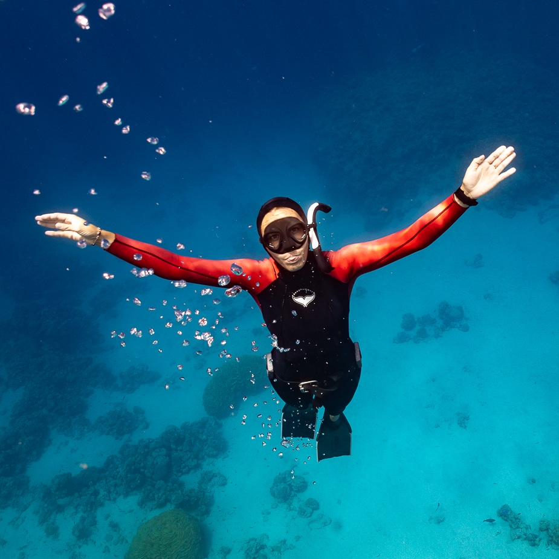
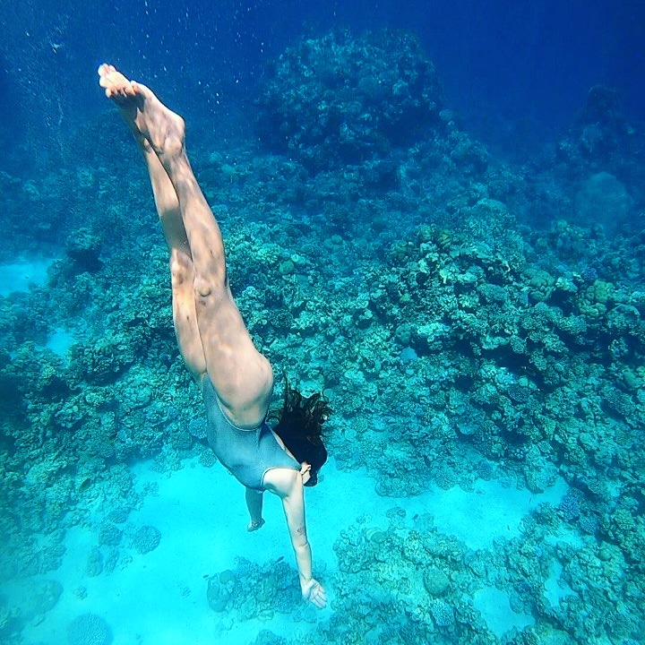
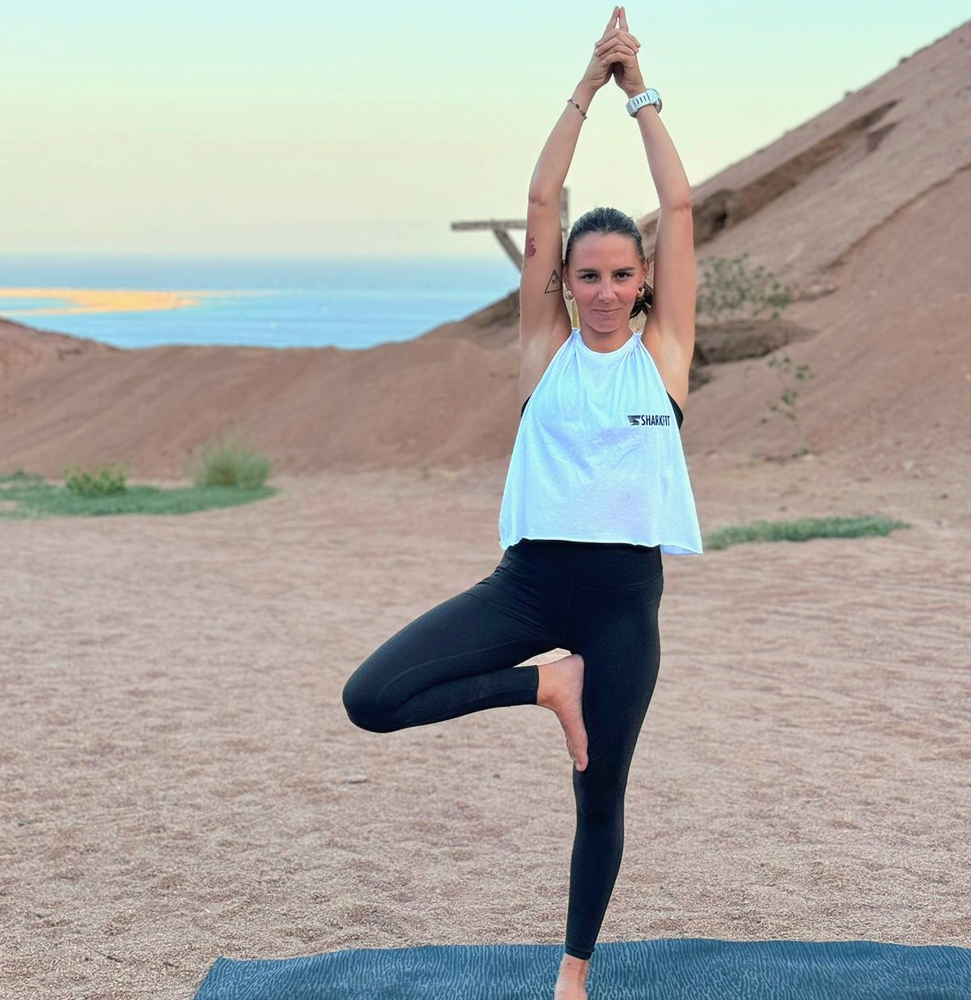
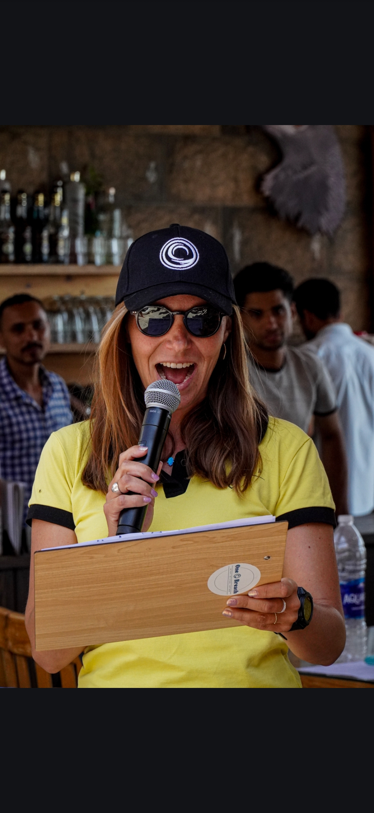
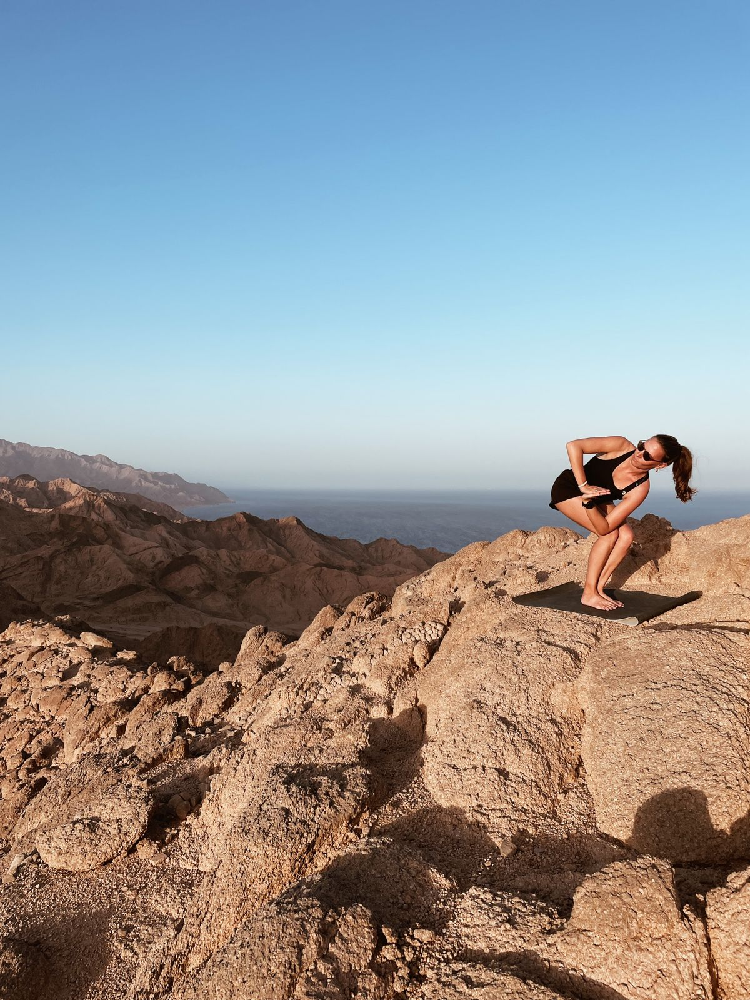
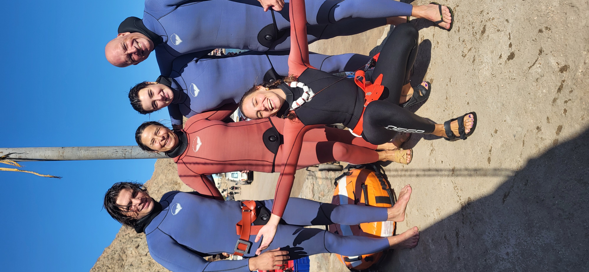
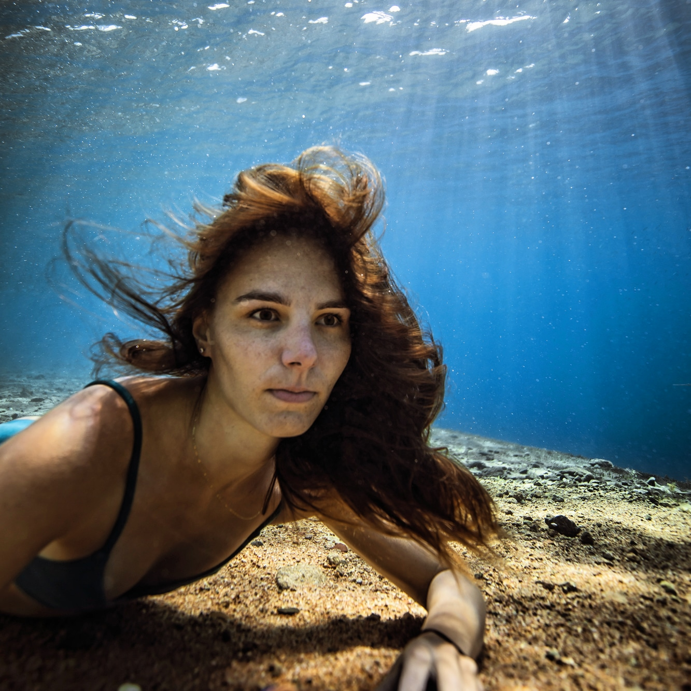
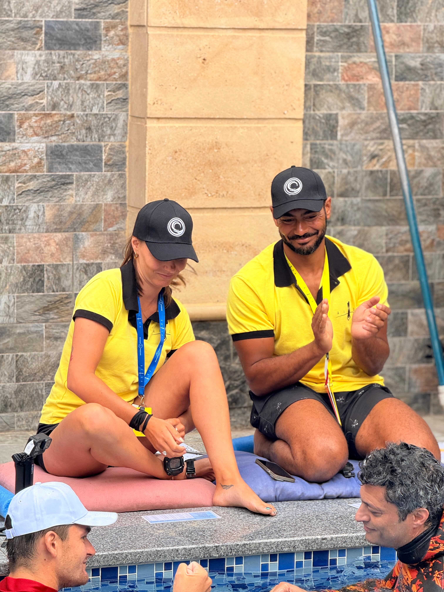

Freediving Classes
Whether you dream of diving deep into the Blue Hole, improving your technique, or simply learning to relax and reconnect with yourself, I’m here to guide and support your journey — in and out of the water.
Red Sea . Desert · Sinai
I guide you toward calm, elegant freediving between deep blues and warm sands.
Presentation
I am based in Dahab, a magical town on the Red Sea that has become a global hub for freedivers and a sanctuary for those seeking inner stillness and a close connection with nature.
With a deep passion for breath, movement, and the ocean, I guide students through their freediving journeys — from first fins in the water to advanced depth training — always rooted in safety, mindfulness, and personal growth. My approach blends the discipline of AIDA standards with the balance, patience, and awareness cultivated through yoga.
Approach
I blend rigor, conscious breathing, and connection to place to build a steady, calming progression.
Each session is designed to build confidence, refine technique, and offer a unique sensory experience.


Whether you dream of diving deep into the Blue Hole, improving your technique, or simply learning to relax and reconnect with yourself, I’m here to guide and support your journey — in and out of the water.

In addition to freediving, I am a certified Hatha Yoga teacher, trained at the Sivananda Ashram in India. My approach to yoga is rooted in traditional principles, but I adapt the practice specifically to support freediving. Through breathwork (pranayama), body awareness, flexibility, and relaxation techniques, yoga becomes a powerful complement to freediving — helping students improve breath-hold capacity, manage stress, and cultivate mental clarity. Whether on the mat or in the water, I focus on creating a mindful connection between body and breath to enhance performance and deepen self-awareness.

Since 2023, I have been an active AIDA judge, certified for both pool (static and dynamic) and depth competitions. This role allows me to contribute to the freediving community from a different perspective — ensuring fairness, safety, and integrity during official events. Being a judge keeps me closely connected to the evolving standards of the sport, and gives me the opportunity to support athletes at all levels as they challenge their limits in a structured and respectful environment.
Experience
We define your rhythm, goals, and comfort together.
Progressive learning with a focus on safety.
Guided dives and contemplative moments.
Gallery




Contact
Write to me for dates, programs, or collaborations.